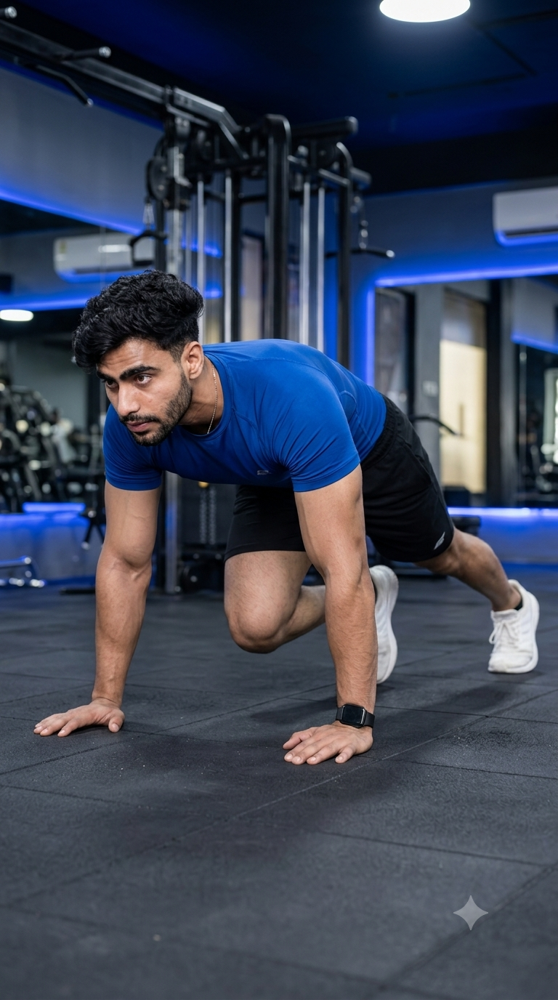

Primary Muscle
Core
Build Core Strength, Improve Cardio Fitness, and Boost Full-Body Endurance
The Mountain Climber is a dynamic full-body exercise that combines core strengthening with cardiovascular conditioning. It challenges the abdominals, shoulders, chest, hip flexors, and legs while elevating your heart rate for an effective calorie-burning workout. Whether your goal is fat loss, athletic performance, or improved functional fitness, Mountain Climbers develop core stability, coordination, agility, and muscular endurance using only your bodyweight.

Core
Bodyweight
Beginner
Cardio & Core
Learn which muscles are activated during the Mountain Climber and how they work together to strengthen the core, stabilize the shoulders, improve hip mobility, and generate the explosive leg drive needed for cardiovascular fitness and athletic performance.
Stabilizes the torso, prevents excessive spinal movement, and keeps the body aligned while the legs drive forward throughout each repetition.
Brace the core, resist unwanted trunk rotation, and improve stability during alternating leg movement.
Support the upper body in the plank position and provide shoulder stability throughout the exercise.
Generate the driving motion of each knee while assisting lower-body stability, speed, and explosive movement.
Discover how the Mountain Climber strengthens your core, improves cardiovascular fitness, burns calories, enhances coordination, and develops full-body endurance for better athletic performance and everyday movement.
Mountain Climbers challenge the abdominal muscles to stabilize the spine throughout every repetition, helping build a stronger and more stable core.
Performing Mountain Climbers at a steady pace raises your heart rate, improving cardiovascular endurance while increasing overall work capacity.
As a dynamic full-body exercise, Mountain Climbers increase energy expenditure, making them effective for fat loss and high-intensity interval training.
The alternating leg movement develops balance, coordination, agility, and body control, helping improve overall athletic performance.
Your shoulders, chest, core, and legs work together continuously, improving muscular endurance and functional fitness.
Mountain Climbers can be performed almost anywhere using only your bodyweight, making them an excellent exercise for home workouts, gym sessions, and travel.
Follow these step-by-step instructions to perform the Mountain Climber with proper technique, maintain a strong plank position, engage your core, and improve cardiovascular endurance while protecting your shoulders and lower back.
Place your hands directly beneath your shoulders with your arms fully extended. Keep your body in a straight line from your head to your heels while engaging your core and glutes.
Avoid letting your hips sag or rise too high.
Tighten your abdominal muscles and keep your spine neutral before initiating any leg movement. Your upper body should remain stable throughout the exercise.
Think about pulling your belly button toward your spine.
Bring one knee forward underneath your torso toward your chest while keeping the opposite leg extended and maintaining a stable plank position.
Move the leg quickly without allowing your hips to twist.
Return the first leg to the starting position while simultaneously driving the opposite knee toward your chest in a smooth, alternating rhythm.
Keep your shoulders directly above your hands.
Continue alternating your legs at a controlled or fast pace depending on your training goal while maintaining proper posture, steady breathing, and continuous core engagement.
Quality movement is more important than speed. Maintain a stable plank throughout every repetition.
Avoid these common technique mistakes to improve core stability, maximize cardiovascular benefits, and perform Mountain Climbers safely while protecting your shoulders, wrists, and lower back.
Allowing your hips to lift too high or drop toward the floor reduces core activation and places unnecessary stress on the lower back.
Keep your body in a straight line from head to heels and brace your core throughout every repetition.
Incomplete knee drives reduce hip mobility and limit core engagement, making the exercise less effective.
Drive each knee toward your chest while keeping your torso stable and your movement controlled.
Excessive body rotation decreases core stability and places additional stress on the shoulders and lower back.
Keep your shoulders square, engage your core, and minimize torso movement as your legs alternate.
Moving too fast without maintaining proper alignment reduces muscle activation and increases the risk of injury.
Master slow, controlled repetitions before increasing your speed, and maintain a strong plank position throughout the exercise.
Apply these expert coaching cues to improve your Mountain Climber technique, maintain a stable plank position, maximize core engagement, and perform every repetition with better control and efficiency.
Keep your body in a straight line from your head to your heels throughout the exercise. A stable plank maximizes core activation and protects your lower back.
Stay long and stay strong.
Bring each knee toward your chest using your hip flexors and core instead of relying on momentum. Controlled movement improves muscle activation.
Control every knee drive.
Press firmly into the floor and keep your shoulders directly above your hands to improve stability and reduce unnecessary wrist and shoulder strain.
Push the floor away.
Start with slow, controlled repetitions before increasing your pace. Proper technique should always come before speed to maximize results and reduce injury risk.
Perfect form beats fast reps.
Progress from mastering a stable plank position to performing faster and more challenging Mountain Climber variations that improve core strength, cardiovascular endurance, agility, and athletic performance.
Learn to maintain a strong plank position with proper shoulder alignment, a neutral spine, and a fully engaged core before introducing leg movement.
Core stability, shoulder positioning, posture, and breathing.
Alternate your knees toward your chest at a controlled pace while keeping your hips level and your upper body completely stable.
Core control, coordination, balance, and movement quality.
Gradually perform Mountain Climbers at a faster pace or for longer intervals while maintaining perfect form and consistent core engagement.
Cardiovascular endurance, muscular endurance, and calorie expenditure.
Progress to Cross-Body Mountain Climbers, Spiderman Mountain Climbers, Sliding Mountain Climbers, or weighted variations to further develop athletic performance, agility, and full-body conditioning.
Explosive power, agility, advanced core strength, and high-level conditioning.
Find answers to common questions about the Mountain Climber, including proper technique, muscles worked, calorie burn, training frequency, and how to improve your cardio fitness and core strength.
Mountain Climbers primarily target the core while also working the shoulders, chest, hip flexors, quadriceps, glutes, and calves, making them an effective full-body exercise.
Yes. Beginners can start by performing slow, controlled repetitions while focusing on maintaining a stable plank position before increasing speed.
Yes. Mountain Climbers elevate your heart rate and engage multiple muscle groups simultaneously, helping increase calorie expenditure during both strength and HIIT workouts.
Perform 2–4 sets of 20–40 repetitions (10–20 per leg) or work for 20–60 seconds while maintaining proper technique and a strong plank position.
Yes. Progress to Cross-Body Mountain Climbers, Spiderman Mountain Climbers, Sliding Mountain Climbers, or increase your speed and workout duration for a greater challenge.
Perform Mountain Climbers two to four times per week as part of your cardio, HIIT, or core training routine to improve endurance, burn calories, and build functional fitness.
Build greater core strength, endurance, and full-body conditioning by combining Mountain Climbers with these complementary exercises for a complete abdominal and functional fitness routine.
Continue strengthening your core with detailed exercise guides covering proper technique, muscles worked, common mistakes, expert coaching tips, and progression strategies designed for every fitness level.